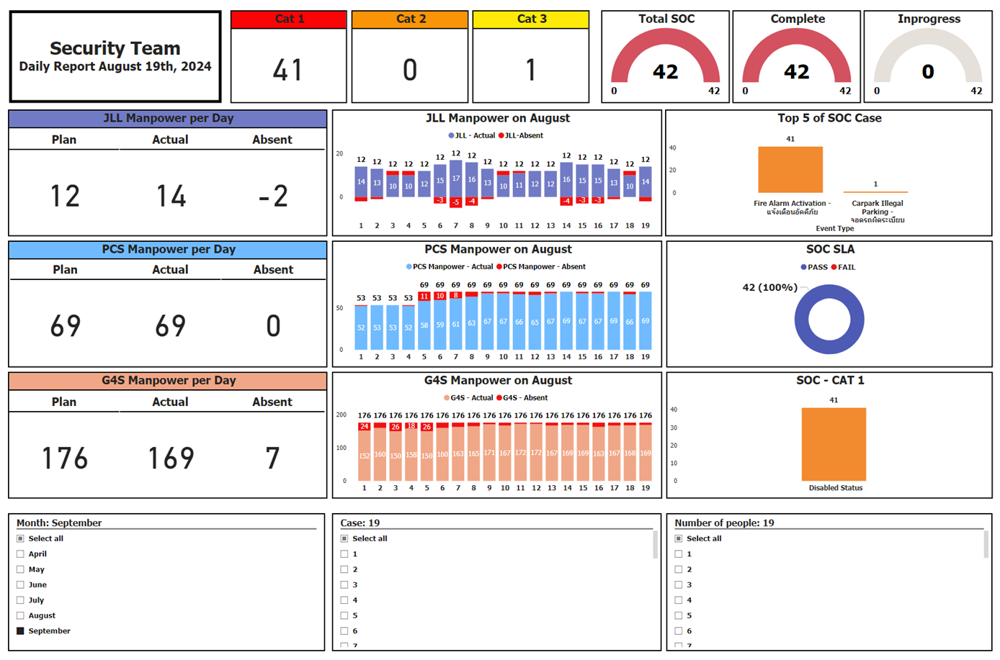
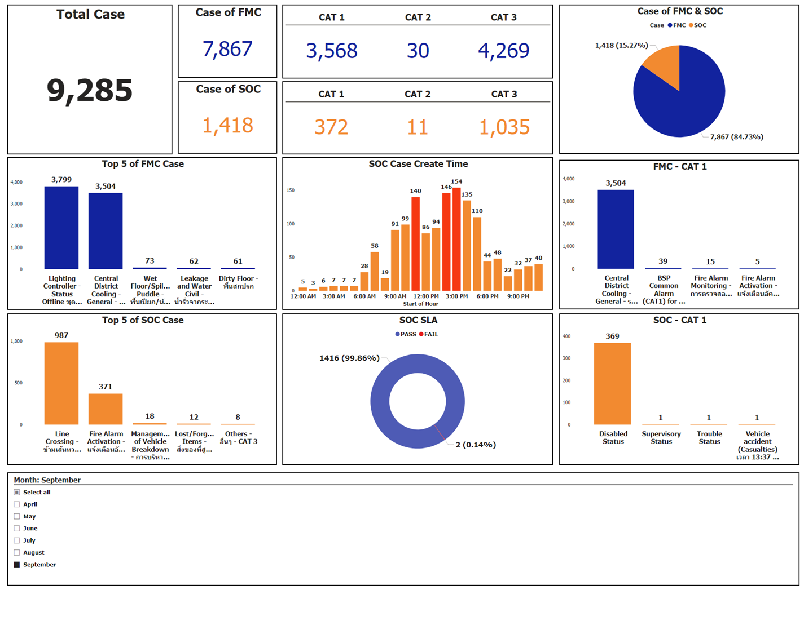
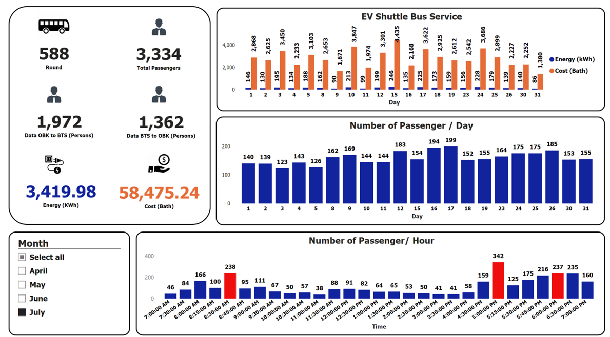

Portfile : My name is Annas. I'm currently studying Telecommunications and Network Engineering at King Mongkut's Institute of Technology Ladkrabang. I'm interested in working in IT and network Engineer. My interest topics include Cybersecurity, Data analytics, Network Administration and Cloud Platform.
Education
Faculty of Engineering Department of Telecommunications Engineering - King Mongkut's Institute of Technology Ladkrabang (2563-2567).
Gifted And Talent Education Program - Attarkiah Islamiah School (2015-2020).
Work Experience
Internship at the TCCTech company
Network Engineer Department
Drag the Path line in the Main Computer Room.
Check cable path via OTDR.
Go to the work site to install network equipment for customers.
DCC department
Analyze Case, Shuttle Bus, Car Park that occurs in One Bangkok in each department with Dashboard via Power BI.
  
My Project in University
Personal IPS
A program created to detect Dos and UDP Flood attacks using Python language to create both GUI screen and internal system.